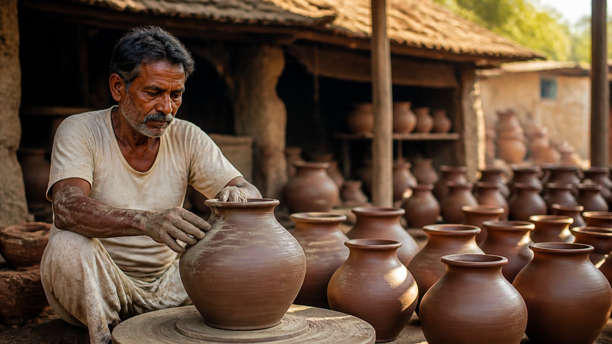

कोई भी काम अपने आप नहीं होता। एक साधारण घड़े से लेकर एक जटिल संगणक कार्यक्रम तक, हर रचना के पीछे कुछ कारण होते हैं।
वेदांत कहता है कि किसी भी कृति को पूरा होने के लिए दो कारण चाहिए: उपादान कारण और निमित्त कारण। पहली नज़र में यह बहुत सरल लगता है। पर इसी सरल बात के भीतर जीवन का एक गहरा प्रश्न छिपा है: असल में करने वाला कौन है?
घड़ा बनाने के लिए क्या-क्या चाहिए?
मान लीजिए, आपको एक घड़ा बनाना है। सबसे पहले मिट्टी चाहिए। पर क्या केवल मिट्टी से काम चल जाएगा?
नहीं। पानी भी चाहिए, और वह गोल-गोल घूमने वाला चाक भी। जो-जो वस्तुएं इस काम में लगती हैं, वे सब मिलकर उपादान कारण (material cause) कहलाती हैं, यानी वह सामग्री जिससे कोई वस्तु बनती है।
इन वस्तुओं के बिना घड़ा बन ही नहीं सकता।
और कुम्हार?
पर केवल सामग्री से भी घड़ा नहीं बनता। कोई चाक चलाएगा, तभी मिट्टी एक जगह आएगी। कोई पानी मिलाएगा, तभी लेप बनेगा। कोई गीला घड़ा उतारकर रखेगा, तभी सूर्य उसे सुखाने का काम करेगा।
यह काम करने वाला जीवित व्यक्ति, कुम्हार, निमित्त कारण (efficient cause) है।
यही नियम हर क्षेत्र में है। बढ़ई के पास लकड़ी, हथौड़ा, कील; सुनार के पास सोना, रसायन, छोटी हथौड़ी; संगीतकार के पास वाद्य; संगणक पर काम करने वाले के पास संगणक। एक ओर सामग्री, दूसरी ओर करने वाला। आचार्य जी कहते हैं कि जब तक ये दोनों कारण नहीं होंगे, तब तक कर्म कभी नहीं होगा।

इतनी सरल बात ब्रह्म सूत्र में क्यों?
आचार्य जी एक तीखा प्रश्न उठाते हैं। इतनी बात तो संसार का कोई भी व्यक्ति समझ लेता है। फिर ब्रह्म सूत्र जैसे महान शास्त्र में इसकी चर्चा क्यों होती है?
क्योंकि इसमें एक तत्व छूट रहा है।
सारी वस्तुएं जड़ (inert) हैं। वे अपने आप एक जगह नहीं आतीं। उन्हें इकट्ठा करने वाला कोई चैतन्य (conscious) व्यक्ति चाहिए। यहां तक ठीक है।
जब कुम्हार का मन ही न हो
अब सोचिए। कुम्हार भी है, मिट्टी, पानी, चाक सब कुछ है। पर उसके मन में घड़ा बनाने की इच्छा ही नहीं जगी।
क्या घड़ा बनेगा? नहीं बनेगा।
आचार्य जी कहते हैं, यहीं से वेदांत आरंभ होता है।
व्यक्ति भी सामग्री ही है
जिसे हम निमित्त मान रहे थे, वह कुम्हार, सुनार, बढ़ई या लोहार, वह भी वास्तविक निमित्त नहीं है। उसका शरीर, मन और बुद्धि भी उपादान ही हैं।
सामग्री में एक प्रतिभाशाली व्यक्ति भी शामिल है। आचार्य जी बताते हैं कि फिर कोई उच्चतर शक्ति उससे काम करवाती है, तभी रचना होती है।
"मैंने बनाया" से आगे देखो
हमारा अहंकार कहता है, "मैंने बनाया।" आचार्य जी कहते हैं, वहीं तक मत रुको। उसके आगे कोई शक्ति है, पहले उसे समझो।
यदि सब कुछ केवल व्यक्ति के हाथ में होता, तो कुम्हार चौबीसों घंटे घड़े ही बनाता रहता। सुनार लगातार सोने का काम करता रहता। डॉक्टर चौबीसों घंटे रोगियों को स्वस्थ ही करता रहता।
पर ऐसा नहीं होता। क्योंकि इच्छा, योजना, सब कुछ भी उपादान की सूची में ही आता है।
आप जो कुछ भी करते हैं, उसमें कितना "मैं" है और कितना कुछ और?
सूची बढ़ती जाती है
वेदांत एक-एक करके चीज़ों को उपादान की ओर रखता जाता है।
- शरीर: कुम्हार की मृत्यु हो जाए, तो उसकी देह पड़ी रहती है, पर घड़ा नहीं बनता। तो शरीर भी उपादान है।
- मन की स्थिति: मूड ठीक हो, तभी काम होता है। यह बदलने वाला तत्व है, यह भी उपादान है।
उस ओर, निमित्त की ओर, अब बहुत कम बचता है।
वास्तविक कर्ता
ऐसे करते-करते साधक समझता है कि वह स्वयं आत्मा है। और अहंकार के ऊपर की जो उच्चतर स्थितियां हैं, उनमें सबसे पहले जो तत्व आता है, वह गणपति है। वही वास्तविक कर्ता बनता है।
बाकी सब उपादान में चला जाता है, और वह निमित्त बनता है। आचार्य जी के शब्दों में, हम "एक step थोड़ा higher" आ गए।
मुख्य बातें
- हर कर्म के लिए दो कारण चाहिए: उपादान (सामग्री) और निमित्त (करने वाला)।
- दोनों में से एक भी न हो, तो कर्म पूरा नहीं होता।
- सामग्री जड़ है; उसे एक जगह लाने के लिए चैतन्य चाहिए।
- इच्छा के बिना निमित्त होते हुए भी कुछ नहीं बनता; यहीं से वेदांत शुरू होता है।
- व्यक्ति का शरीर, मन, बुद्धि, इच्छा, योजना और मनःस्थिति, सब उपादान ही हैं।
- "मैंने बनाया" वाले अहंकार से आगे एक उच्चतर शक्ति है, जो वास्तविक कर्ता है।